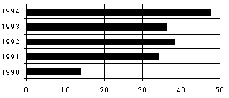
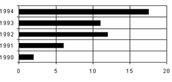

AUTOMOBILE ACCIDENTS IN COUNTRY X: 1990 TO 1994
(in ten thousands)

CARS IN COUNTRY X
(in millions)

If no car in 1993 was involved in more than four accidents, what is the minimum number of cars that could have been in accidents in 1993?
= 90,000
360,000
4
The answer is (E).